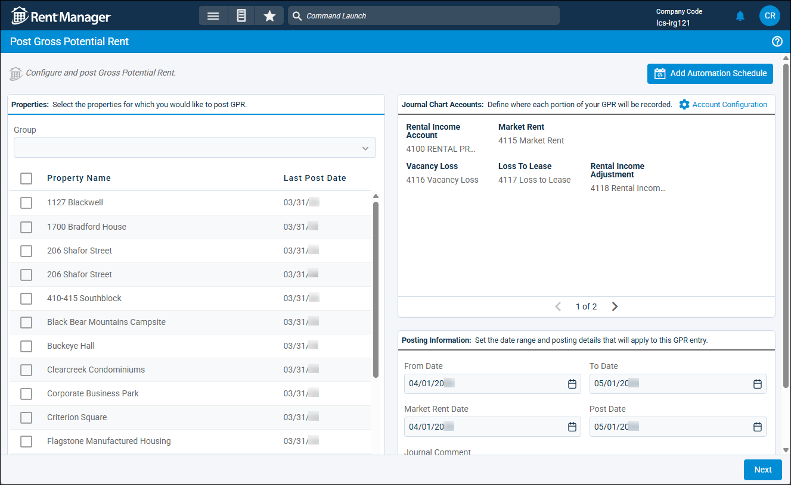
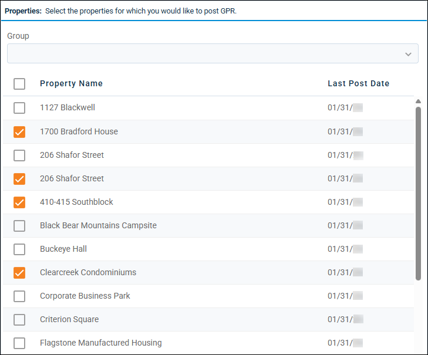
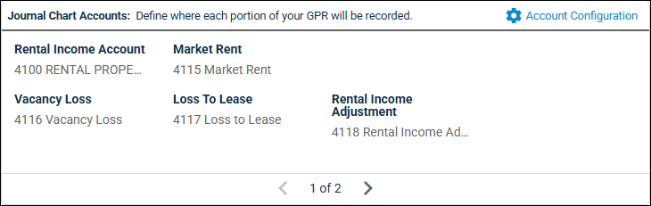
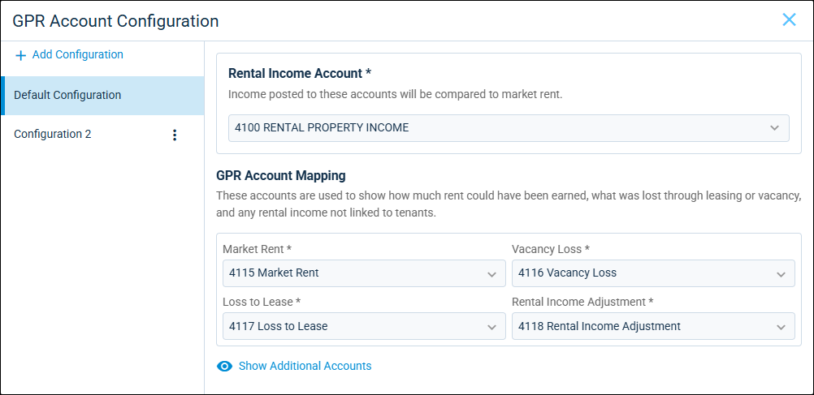
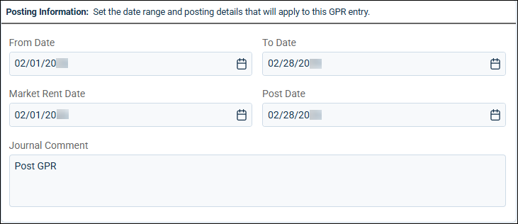
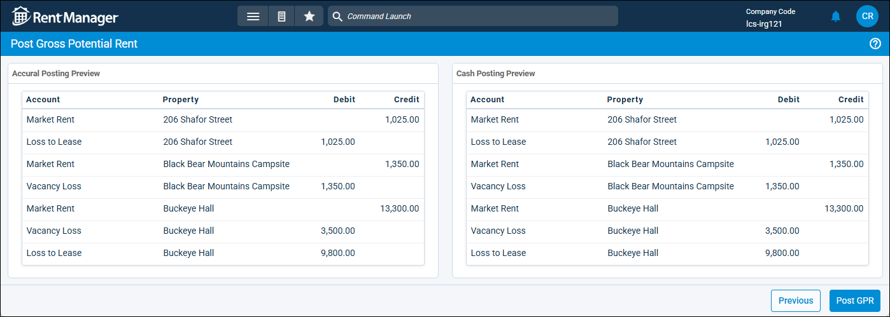

Source: https://rmxhelp.rentmanager.com/Topics/Express/Other/Post-GPR.htm
Post Gross Potential Rent (GPR)
Gross potential rent (GPR) is the maximum revenue that a property could generate if it was rented at full capacity and at full market value. You can calculate a property's GPR and use the data to analyze profitability, forecast income, and identify risks.
When posting GPR, Rent Manager creates a journal entry that reduces the rental income general ledger (GL) account to $0 and then adjusts other designated income GL accounts to project maximum revenue through metrics such as market rent, loss to lease, and vacancy loss. Breaking rental income into components makes it easier to spot where profits are not being maximized.
Before you can calculate the GPR for a property (or properties), verify that market rent data has been entered for each property for which you plan to post GPR matches the unit's market rent. Additionally, you should ensure the chart of accounts includes rental income subaccounts.
More Information
You can add a GPR posting schedule by selecting Add Automation Schedule in the top right of the page. Task Automation reduces the time spent manually adding or editing GPR postings and curtails possible errors. For more information, refer to Add a GPR Posting Automation.
Related Privileges
| Group | Privilege | Column |
|---|---|---|
| Accounting | Journal Entries | Add |
| Post gross potential rent | Enabled |
For more information, refer to Control User Access.

Warning
Post GPR only once per financial cycle (e.g., at the end of the month) after all activity has been completed, including all accounts receivable and accounts payable activity, and management fee and owner payments are completed.
Step 1: Select the Properties
To begin posting GPR, do the following:
-
Go to
 arrow_forward Accounting arrow_forward Gross Potential Rent arrow_forward Post GPR.
arrow_forward Accounting arrow_forward Gross Potential Rent arrow_forward Post GPR.
The Post Gross Potential Rent page displays. -
In the Properties tile, select one or more properties for which to post GPR or select a property Group from the drop-down list. At least one property must be selected in order to post GPR.

More Information
Only properties to which you have access display. Your access to properties can be managed from your user account or on the property's details page. For more information, refer to Limit Access to a Property.
Step 2: Select the Journal Chart Accounts
In the Journal Chart Accounts tile, you can create and manage multiple chart account configurations by unit type to accurately compare market rents to the appropriate rental income accounts. Multiple configurations are useful for when users need to separate results such as vacancy loss or loss to lease by income type to capture a complete and accurate view of rental performance. The first configuration is considered the default configuration for the posting.

More Information
GPR is calculated using GL account activity, not the rental charge type(s) used at a property. Transactions for multiple rental charge types may be recorded under one GL account.
To select the journal chart accounts for the GPR posting, do the following:
-
In the Journal Chart Accounts tile, click
 Account Configuration.
Account Configuration.
-
Edit a configuration by selecting each chart account type.
Account Description Rental Income Account
The primary source of funds for paying expenses as collected via the property's rent charges. Unit Types
The relevant unit type(s) for which the rental income account(s) is compared to market rent.
More Information
This option is only available for a non-default configuration. The default configuration examines all unit types.
Market Rent
The average price of rent for similar units or rentable assets in the area. Market rent is displayed as found on each unit's details page in the Current Market Rent tile and on each asset's details page in the Market Rent field.
Vacancy Loss
The market rent of all vacant units.
Loss To Lease
The below-market value rent charges for occupied units.
Rental Income Adjustment
Receivables not linked to tenants, income entered using journal entries, and items not accounted for using other accounts.
-
If applicable, click
 Show Additional Accounts and configure the following fields:
Show Additional Accounts and configure the following fields:Account Description Beginning Prepay
The prepaid charges at the beginning of the posting period. If left blank, prepaid amounts are rolled into the Rental Income Adjustment account.
This account type displays only when running financial reports on a cash basis and applies only to rent charge types selected on the associated property.
Related Preferences
This account type requires that the system accounts for prepays to be income-type accounts. Additionally, Record cash preallocations as a liability (applies to new payments and credits) and Record accrual prepayments as a liability (applies to new payments) cannot be selected in system preferences. For more information, refer to General Ledger System Accounts (System Preferences) and General Ledger Settings (System Preferences).
Ending Prepay
The prepaid charges at the end of the posting period. If left blank, prepaid amounts are rolled into the Rental Income Adjustment account.
This account type displays only when running financial reports on a cash basis and applies only to rent charge types selected on the associated property.
Related Preferences
This account type requires the system accounts for prepays to be income-type accounts. Additionally, Record cash preallocations as a liability (applies to new payments and credits) and Record accrual prepayments as a liability (applies to new payments) cannot be selected in system preferences. For more information, refer to General Ledger System Accounts (System Preferences) and General Ledger Settings (System Preferences).
Beginning Arrears
The open charges at the beginning of the posting period. If left blank, open charges are rolled into the Rental Income Adjustment account.
Ending Arrears
The open charges at the end of the posting period. If left blank, open charges are rolled into the Rental Income Adjustment account.
This account type displays only when running financial reports on a cash basis.
-
To add an additional account configuration, click
 Add Configuration in the top left.
Add Configuration in the top left.
Step 3: Enter Posting Details

-
In the Posting Information tile, enter information into the following fields:
Field Description From Date
The first day of the last full month prior to the current date or the first day since the last GPR post date.
Journal Comment
An optional comment about the GPR posting that displays in the posted journal entries.
Market Rent Date
The date the market rent for units at the property was last updated. By default, this field populates with the date entered in the From Date field and is the date Rent Manager uses to calculate GPR.
Post Date
The date on which the GPR journals post. By default, this field populates with the date entered in the To Date field since it is the date of the final day in the posting period.
To Date
The last full month prior to the current date or one month after the From Date.
-
When finished, click Next.
Step 4: Post GPR
GPR posting creates two related journal entries: an accrual basis journal and a cash basis journal. The posting preview shows the GPR breakdown for both accrual and cash basis postings. If multiple chart account configurations are used, each configuration displays its own section.

Once you review the configurations to ensure the information was selected correctly, click Post GPR and then, on the success message pop-up, click OK. Rent Manager zeroes out the rental income account by moving funds into the configured subaccounts with journal entries.